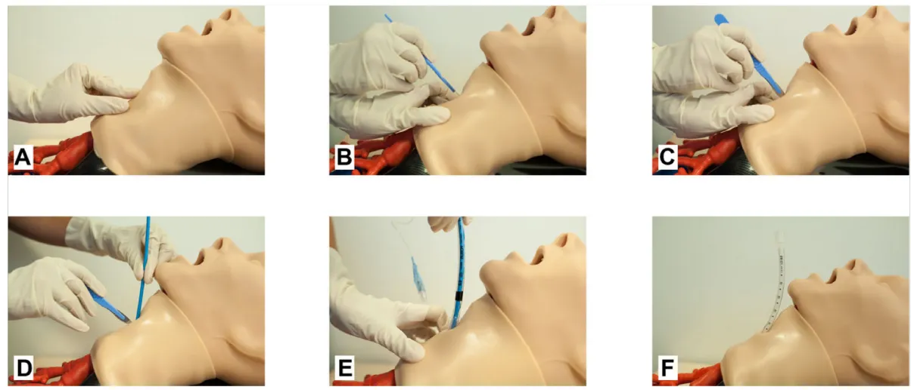

(Scalpel – Mandrin long béquillé – Sonde d'intubation)
Oxygéner sans délai le patient pour éviter la survenue d'un arrêt cardiaque ou de lésions cérébrales hypoxiques

The image consists of six panels, labeled A through F, showing a step-by-step procedure on a medical mannequin. Panel A shows a scalpel being used to make a horizontal incision on the neck. Panel B shows the scalpel being rotated 90 degrees to make a caudal incision. Panel C shows a long, curved retractor (mandrin) being placed along the incision. Panel D shows a lubricated intubation tube being passed through the mandrin. Panel E shows the tube being removed from the mandrin. Panel F shows the tube in place in the trachea, with a capnography tube and stethoscope being used to verify its position.Fig. 1 Cricothyroïdomie par technique SMS (Scalpel, Mandrin, Sonde).
A. Repérage de la membrane cricothyroïdienne en position d'extension cervicale ; B. Incision transversale horizontale de la membrane cricothyroïdienne par le scalpel ; C. Rotation à 90° du scalpel pour une incision caudale de la membrane cricothyroïdienne ; D. Faire glisser le mandrin long béquillé le long de la lame de scalpel ; E. Glisser la sonde d'intubation lubrifiée le long du mandrin long béquillé puis retirer le mandrin ; F. Vérifier la bonne position dans la trachée par la capnographie et l'auscultation pulmonaire et fixer la sonde.
D'après Duwat et al. Ann. Fr. Med. Urgence (2017) 7:319-322 DOI 10.1007/s13341-017-0775-8.